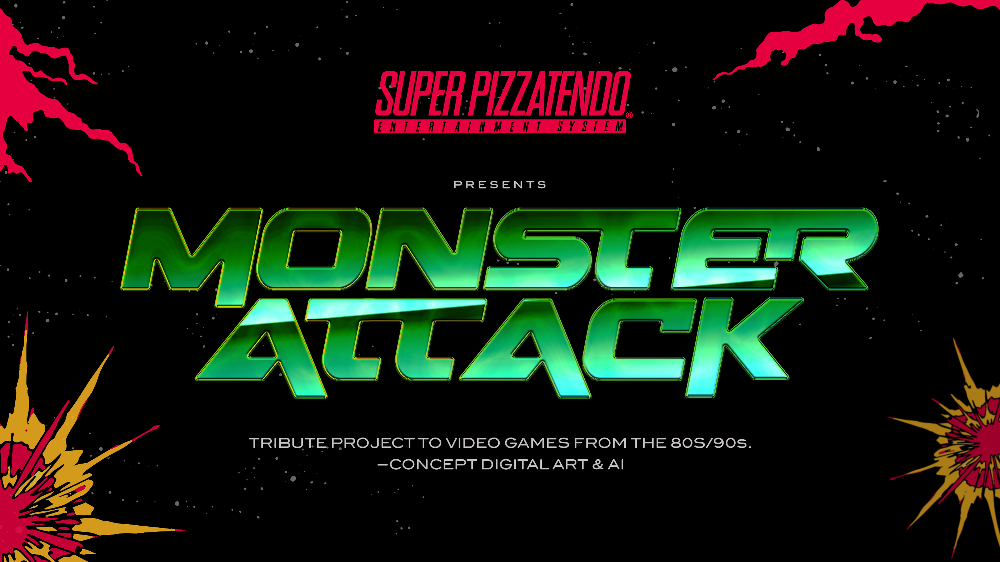
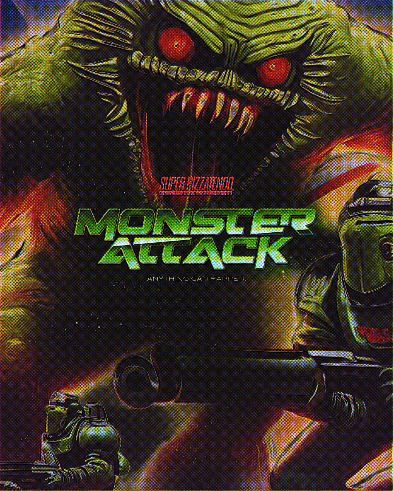
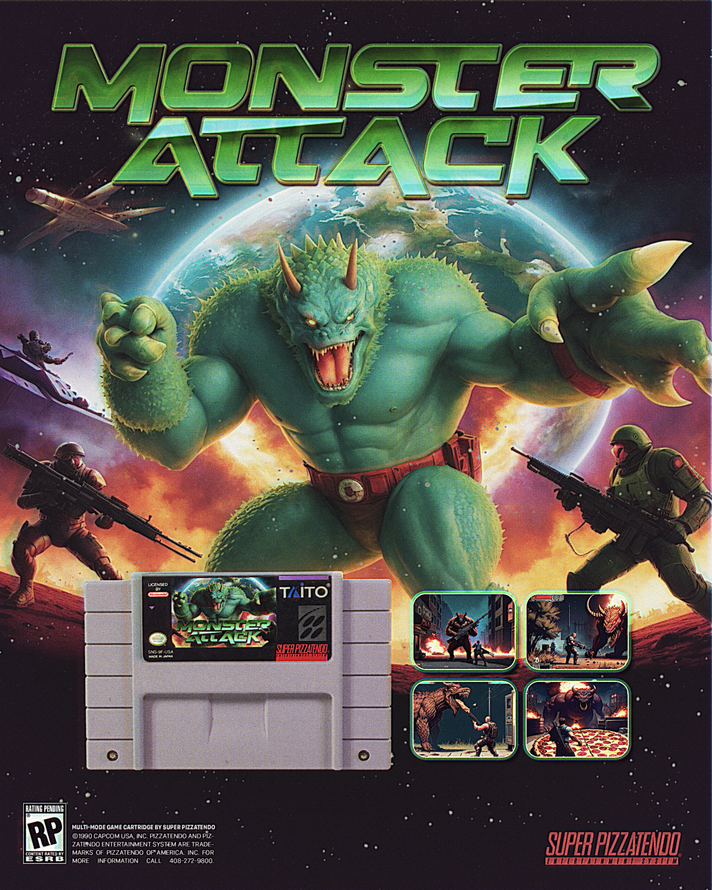
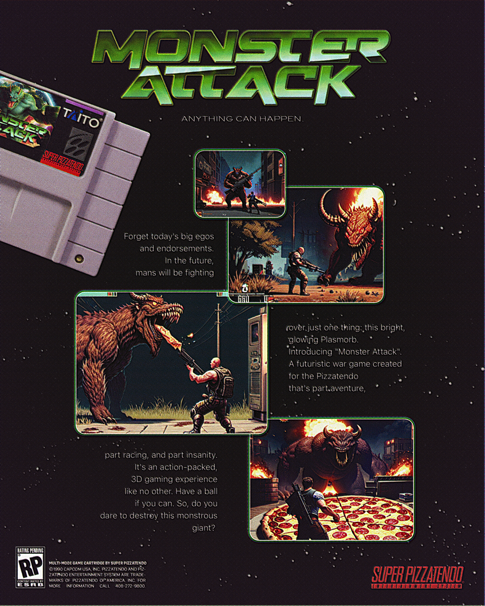

Monsters Attack
A tribute to 80s and 90s video game culture, built around a fictional arcade-era monster invasion.
Monsters Attack imagines the visual universe of a lost action game: oversized creatures, explosive packaging, cartridge art, instruction-manual energy and the dramatic excess of early console advertising.
The project explores nostalgia, graphic exaggeration and AI image-making through the language of retro gaming — where everything is louder, stranger and designed as if the end of the world could fit inside a plastic cartridge.
2023



